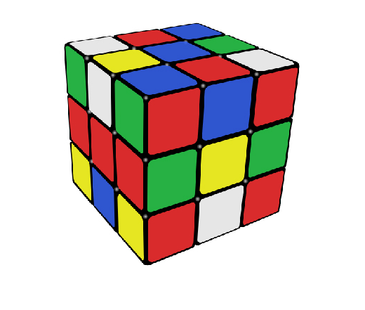
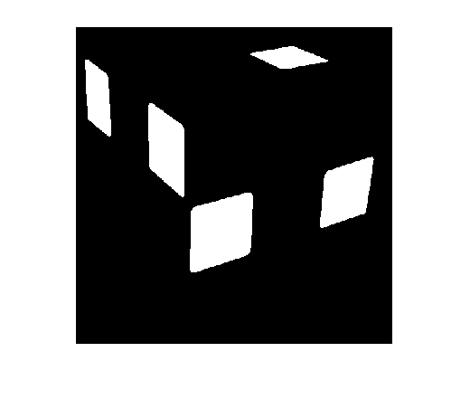
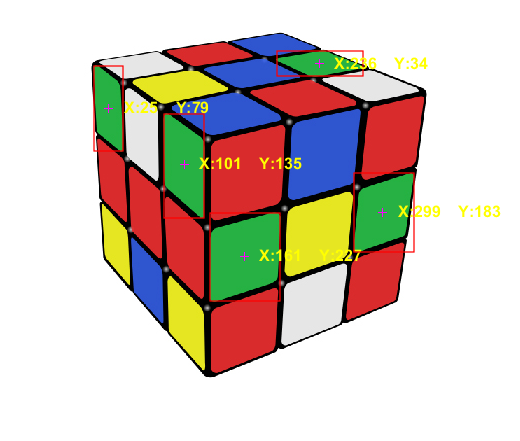
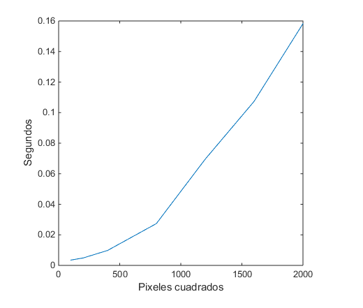

Prueba de concepto usada
Contents
Obtencion de la informacion de la imagen
data = imread('resources\rubik.jpg');
imshow(data);

Seleccion del pixel con el color deseado
pixelRGB = impixel(data);
pixelRGB
pixelRGB =
39 177 68
Filtrado de color
variance = 10;
[xL, yL, ~] = size(data);
bw = zeros(xL,yL);
r = data(:,:,1);
g = data(:,:,2);
b = data(:,:,3);
Eliminacion de valores
min = pixelRGB(1) - variance;
if min < 0
min = 0;
end
positions = find(r >= min);
positions = intersect(positions, find(r <= (pixelRGB(1) + variance)));
min = pixelRGB(2) - variance;
if min < 0
min = 0;
end
positions = intersect(positions, find(g >= min));
positions = intersect(positions, find(g <= (pixelRGB(2) + variance)));
min = pixelRGB(3) - variance;
if min < 0
min = 0;
end
positions = intersect(positions, find(b >= min));
positions = intersect(positions, find(b <= (pixelRGB(3) + variance)));
for i = 1:length(positions)
bw(positions(i)) = 1;
end
imshow(bw);

Obtencion de los centros y las cajas de union
imshow(data);
bw = bwareaopen(bw, 300);
regions = regionprops(bw, 'BoundingBox', 'Centroid');
hold on
for object = 1:length(regions)
bb = regions(object).BoundingBox;
bc = regions(object).Centroid;
rectangle('Position', bb, 'EdgeColor', 'r', 'LineWidth', 1)
plot(bc(1), bc(2), '-m+')
a=text(bc(1) + 15, bc(2), strcat('X: ', num2str(round(bc(1))), ' Y: ', num2str(round(bc(2)))));
set(a, 'FontName', 'Arial', 'FontWeight', 'bold', 'FontSize', 12, 'Color', 'yellow');
end
hold off

Resultados
a = [2000, 1600, 1200, 800, 400, 200, 100];
times = zeros(1, length(a));
addpath function;
for i = 1:length(a)
data = imread(['resources\rubik_', int2str(a(i)), '.jpg']);
start = tic;
hold on;
regions = getRegionsColor(data, a, 10);
hold off;
times(i) = toc(start);
end
plot(a, times);
ylabel('Segundos'); xlabel('Pixeles cuadrados');
rmpath function;
